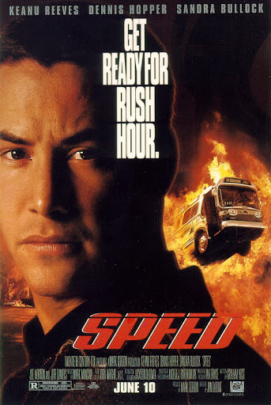

스피드
- 감독 얀 드봉
- 개봉년도 1994
- 상영시간 1시간 56분
- 15세 이상 관람가
- 키아누 리브스 / 샌드라 불럭
줄거리전직 경찰관 페인은 부상을 당한 뒤 은퇴한 것에 불만을 품고 인질극을 벌이다가 경찰 특수기동대 잭과 해리가 인질을 구출하는 바람에 실패하고 만다. 앙심을 품은 페인은 시내버스에 속도가 시속 50마일 밑으로 내려가면 폭발하는 폭탄을 장치해 놓는다. 잭은 차에 올라탔다 버스기사가 총에 맞는 바람에 어떨결에 운전대를 잡지만 다행히 버스가 폭발하기 직전 승객들을 구한다. 한편 경찰은 그 사실을 모르는 페인을 잡기 위해 함정을 설치한다.